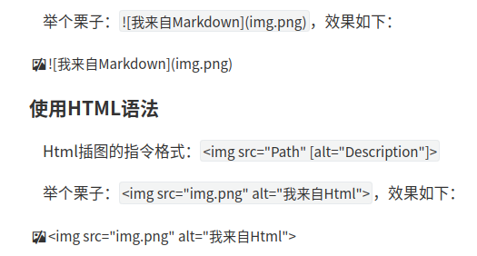
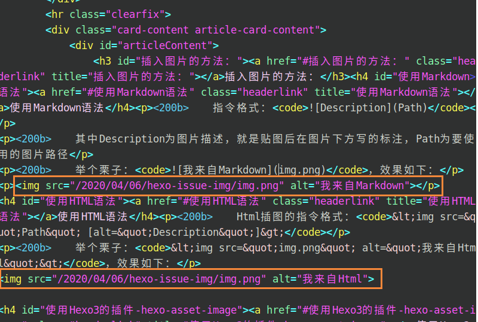
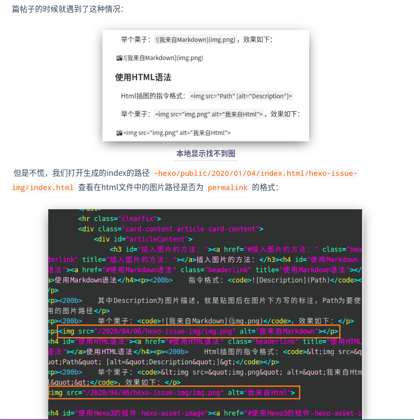

本文总结了在Hexo文章中插入图片的常用方法以及可能遇到的一些问题的解决方案。
插入图片的方法：
使用Markdown语法
指令格式：
其中Description为图片描述，就是贴图后在图片下方写的标注，Path为要使用的图片路径
举个栗子：，效果如下：
使用HTML语法
Html插图的指令格式：<img src="Path" [alt="Description"]>
举个栗子：<img src="img.png" alt="我来自Html">，效果如下：
使用Hexo3的插件 hexo-asset-image
先 hexo -v 确保所装的hexo是3.0以上的版本
需要先在Hexo根目录下安装插件
npm install hexo-asset-image --save，然后修改插件内的某个bug，不然会报错。
打开
~node_module/hexo-asset-image/index.js，直接清空了然后把下面的代码复制进去保存就行。
1 | ; |
使用该插件插图的指令格式如下：
ps: 我试图用markdown的行内代码来表示这个指令格式，但是居然被它无视了，为了避免显示两次图还没显示格式，我只好用代码段来锁住这个妖怪了！
1 | {% asset_img Path [Description] %} # 格式 |

一些可能会碰到的问题
图片路径问题
有时候本地写md插入图片显示挺正常的，一进行 hexo g
生成文章后，不论是用 hexo s 在本地服务器查看，或者是
hexo d部署后到网站查看，图片都是裂的或者干脆就没有。这时候打开
~hexo/public 目录查看文章的 index.html
，我们会发现每个img的路径不对，错误的方式一般有两种：文件夹名称乱码 或者
永久链接路径错误。
解决方案
先到根目录下的 _config.yml
把永久链接设置好，默认的格式一般是
permalink: :year/:month/:day/:title/，可以额外设置两个可选项，完整格式如下：
1 | permalink: :year/:month/:day/:title/ |
按照上面的方法安装 hexo-asset-image 插件并修改bug。
设置根目录下的 _config.yml
内容：post_asset_folder: true，其功能是在
hexo new post
创建新文章时，会在相同路径下生成一个与文章同名的文件夹，把文章需要用到的图片都存放到这个文件夹里，在md中使用时可以使用上面三种方法的任意一种，因为这个插件自动设置了相对路径，所以直接使用图片名作为Path即可(
上面三个图就是示例)。
需要注意的是，完成了这些步骤之后，按照直接用图片名作为路径的方式插入图片，可能不会显示出来，我写这篇帖子的时候就遇到了这种情况：

但是不慌，我们打开生成的index的路径
~hexo/public/2020/01/04/index.html/hexo-issue-img/index.html
查看在html文件中的图片路径是否为 permalink 的格式：

可以看到，图片路径的格式为
:year/:month/:day/:title，与permalink的格式一样，说明图片在博客生成之后是可以正常显示的，我们现在用
hexo s 打开本地服务器，看看图片在博客中的显示情况：

一切正常，现在可以放心地 hexo d 了！
图片的缩放
我似乎没有找到markdown的图片缩放属性，每次对图片进行缩放就自动变成html的语法了，那我在这里就只介绍html和asset的缩放方式吧，不过其实也就是加个属性而已，大家一看就能懂，这里就不多做解释了。
1 | # html |
1 | # hexo-asset-image |
permalink使用:hash或abbrlink导致图片无法加载
abbrlink使用方式:
1 | # 安装 |
一开始我希望将文章的url结尾设置为
xxx.html，于是我将permalink设置为
archive/:abbrlink.html ，发现图片路径变成了
abbrlink.html/x.png，由于 hexo-asset-image 插件创建的是与
.md 文件同名的文件夹，不会带有 html
后缀，因此图片总是加载失败，我暂时不知道如何实现我的想法，目前的解决方案如上述所示，文章的url以abbrlink结尾，不带有
.html 后缀，但图片在本地和云端都可正常加载。